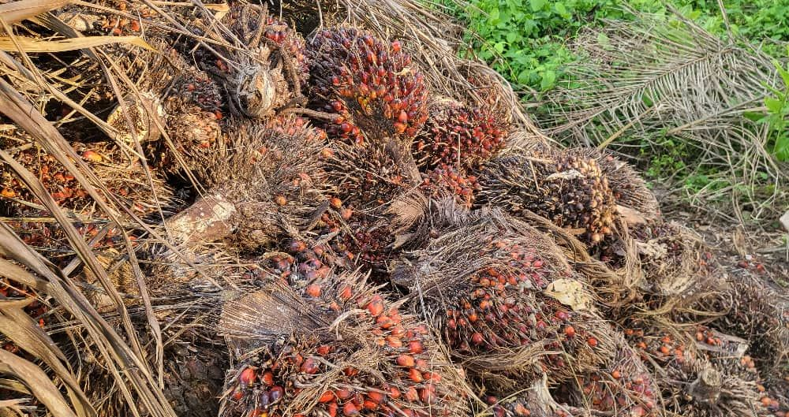
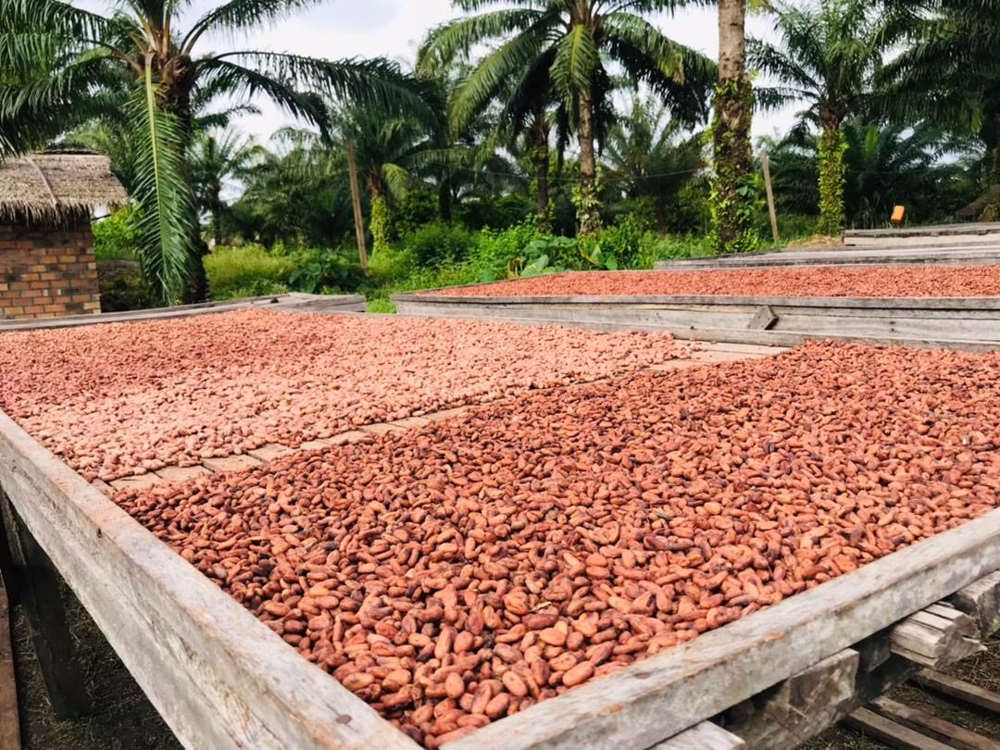
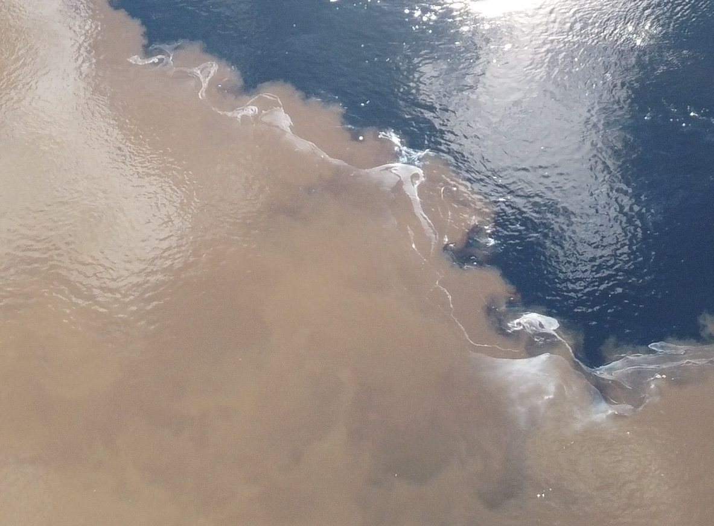
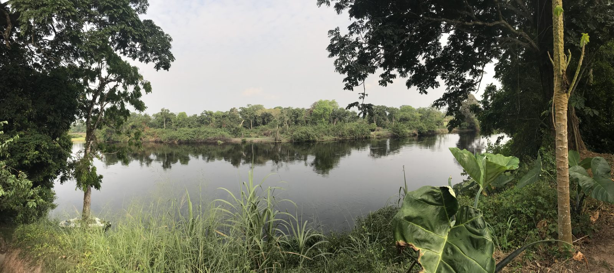

L'huile de palme,
le cacao et le safou
de la Likouala.
Sept cultures sur une même terre, à la confluence de l'Ibenga et de l'Oubangui. Récoltées, transformées et expédiées par l'exploitation qui les fait pousser depuis 2006.
Trois produits emblématiques,
quatre cultures de saison.
Chaque produit porte son origine, sa saison de récolte et son mode de transformation. Rien n'est acheté ailleurs pour être revendu.


Nous ne sommes pas un négociant. Nous sommes ceux qui plantent, ceux qui récoltent, et ceux qui pressent.
Ce que vous recevez a poussé ici, entre deux rivières, et n'a quitté Ibenga qu'une fois prêt à voyager.
De la récolte au départ,
tout se fait ici.
Deux récoltes, deux savoir-faire, un seul lieu : les régimes de noix de palme d'un côté, les fèves de cacao de l'autre.

Les régimes
Les régimes de noix de palme sont coupés à maturité, quand les noix rougissent.

Les fèves
Sorties des cabosses, les fèves de cacao sèchent au soleil sur des claies installées sous les palmiers.

Le départ
Par la rivière ou par la route, vers Brazzaville, Pointe-Noire et l'export.
Une terre entre deux rivières.
Le domaine est installé au village d'Ibenga, dans le district d'Enyellé, là où l'Ibenga rejoint l'Oubangui. Des cultures associées, à l'abri de la forêt.
Depuis 2006, l'exploitation cultive, transforme sur place, et fait vivre les familles du village qui y travaillent.

Acheter, transformer,
distribuer.
L'exploitation fournit en direct, sans intermédiaire. Chaque relation commence par un besoin clairement exprimé : dites-nous ce qu'il vous faut, nous vous répondons avec une proposition.
- Distributeurs et revendeursDétail et gros
- Transformateurs agroalimentairesMatière première
- Restauration et hôtellerieApprovisionnement
- Partenaires et investisseursSur dossier

Venir à Ibenga, voir de ses yeux.
L'exploitation reçoit des visiteurs, des étudiants et des porteurs de projet. On marche dans la plantation, on assiste au pressage, on goûte. La page Visiter dit comment venir et où dormir.